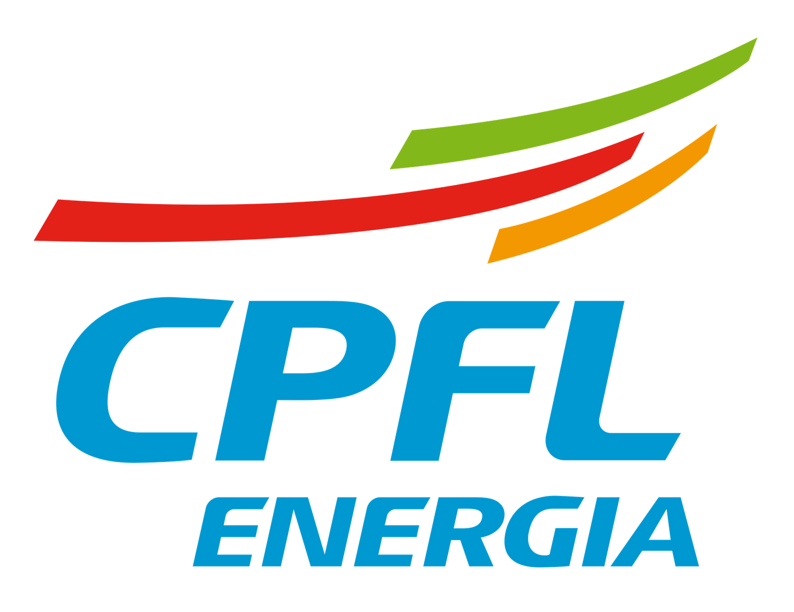
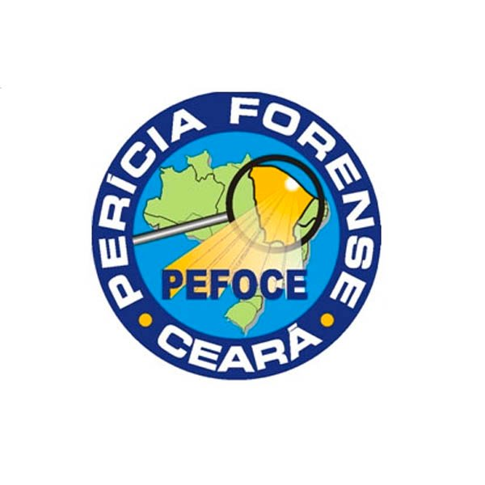
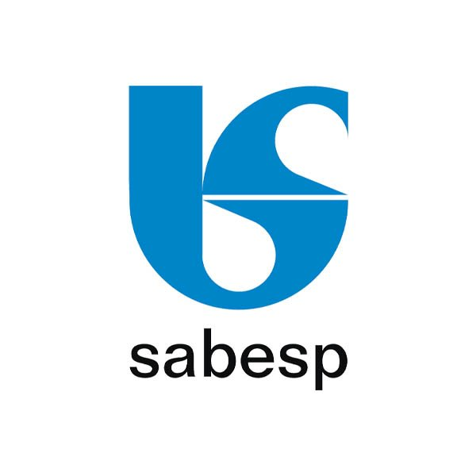
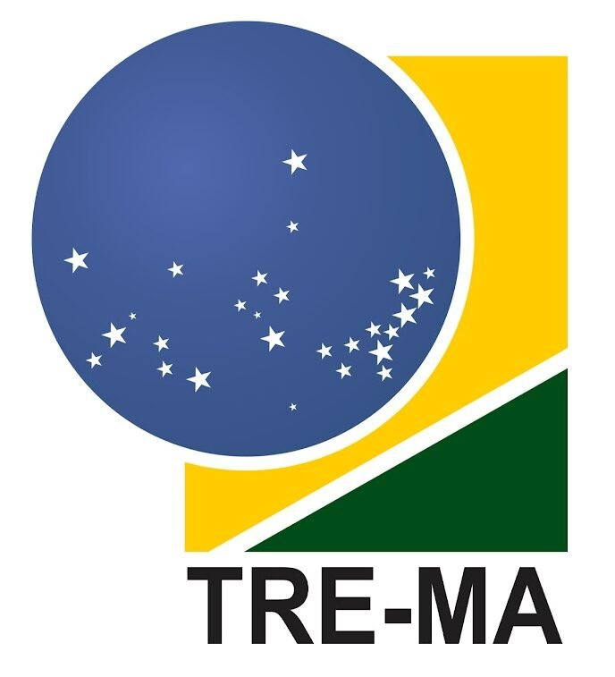

Treinamento de Produtividade com IA:
Materiais Completos
Transforme colaboradores em especialistas com 4 horas intensivas. ROI médio de 3,7x com automações práticas corporativas.
Duração: 4 horas (240 minutos)
Modalidade: Híbrida (presencial/online)
Metodologia: 40% teoria aplicada, 60% hands-on prático
Apenas 16 vagas para esta turma!
Este treinamento foi feito para você que...
O Treinamento de Produtividade com IA foi desenvolvido para transformar a carreira de profissionais que enfrentam uma das seguintes situações:
Perde horas em tarefas repetitivas que poderiam ser automatizadas com IA (relatórios, documentos, análises).
Não sabe como usar IA de forma prática no trabalho para gerar resultados mensuráveis e ROI.
Tem dificuldade para processar grandes volumes de dados, vídeos, áudios e documentos corporativos.
Não conhece as ferramentas certas para automação de processos complexos multi-etapas no ambiente corporativo.
Quer implementar IA na empresa mas não sabe por onde começar ou como medir resultados práticos.
Precisa treinar equipes para usar IA de forma estratégica e gerar produtividade mensurável.
Estrutura Modular Otimizada: 7 Módulos Práticos
Se você se identificou com 1 ou mais situações, este treinamento foi desenvolvido especialmente para você. Do básico ao avançado, com metodologia hands-on e casos reais corporativos. Veja tudo o que você vai dominar.
Módulo 1 – Automatizações de Office (90 minutos)
Foco principal: Transforme tarefas administrativas repetitivas em workflows automatizados usando as mais avançadas ferramentas de IA integradas ao ambiente corporativo.
O que você vai dominar:- Google Gemini para automação nativa no Workspace
- Skywork.ai para geração automatizada de documentos
- Manus.ai para automação de tarefas complexas multi-etapas
- Exercício prático: Workflow completo para relatório mensal automatizado
- Templates de automação: Modelos prontos para implementação imediata em relatórios, apresentações e documentos corporativos.
- Guia de integração: Passo a passo para conectar ferramentas de IA com Google Workspace e Microsoft 365.
- Workflow funcional: Sistema completo de relatório mensal automatizado pronto para uso.
Módulo 2 – Automações de Processos Repetidos (60 minutos)
Orquestração inteligente de múltiplas ferramentas para criar sistemas de automação complexos que eliminam gargalos operacionais.
Você vai aprender:- Genspark.ai Super Agent para orquestração múltipla
- Zai GLM4.5 para workflow complexos com function calling
- Qwen Code para automação de desenvolvimento
- Exercício prático: Sistema de onboarding automatizado completo
- Sistema de onboarding: Processo completo automatizado
- Biblioteca de agents: Agentes reutilizáveis para diferentes processos
- Guia de orquestração: Como conectar múltiplas ferramentas
Módulo 3 – Resumos e Sumários de Vídeo e Áudio (40 minutos)
Reduza 70% do tempo gasto em análise documental com ferramentas especializadas em processamento de conteúdo multimídia.
Você vai dominar:- Google NotebookLM para Audio/Video Overviews
- Qwen 2.5 VL para análise de vídeos extensos
- Resultado esperado: 70% de redução no tempo de análise documental
- Templates de resumo: Formatos otimizados para diferentes tipos de conteúdo
- Workflow de análise: Processo padronizado para vídeos e áudios corporativos
Módulo 4 – Insights de Grandes Volumes de Dados (30 minutos)
Transforme montanhas de dados em insights acionáveis usando IA avançada para análise multi-fonte e reasoning complexo.
Você vai aprender:- NotebookLM para análise multi-fonte consolidada
- Skywork.ai DeepResearch para pesquisa automatizada
- Deepseek V3.1 para reasoning avançado
- Dashboard de insights: Visualizações automáticas de dados complexos
- Relatórios inteligentes: Templates para análise multi-fonte
Módulo 5 – Descrição e Criação de Imagem (30 minutos)
Automatize a criação de conteúdo visual corporativo e análise avançada de imagens com OCR e geração integrada.
Você vai dominar:- Qwen 2.5 VL para análise avançada e OCR
- Google Gemini para geração integrada
- Genspark.ai para conteúdo visual corporativo
- Biblioteca visual: Templates e assets corporativos automatizados
- Sistema OCR: Extração automática de texto de documentos
Módulo 6 – Engenharia de Prompt e Contexto (20 minutos)
Domine as técnicas avançadas de prompting para maximizar a eficácia de qualquer ferramenta de IA.
Você vai aprender:- Chain-of-thought prompting e few-shot learning
- Context window optimization e RAG
- Biblioteca de prompts reutilizáveis
- Biblioteca de prompts: Coleção de prompts otimizados para diferentes cenários
- Guia de otimização: Técnicas para maximizar resultados
Módulo 7 – MCP e Agents AI (30 minutos)
Implemente agentes autônomos completos usando Model Context Protocol para automação de processos corporativos complexos.
Você vai dominar:- Model Context Protocol implementation
- Manus.ai para agentes autônomos completos
- Orquestração multi-agent e error handling
- Agentes configurados: Sistemas autônomos prontos para implementação
- Guia de orquestração: Como gerenciar múltiplos agentes
Projeto Final Integrador
"Centro de Comando de Produtividade IA" - Sistema integrado combinando todas as tecnologias para automatizar processo corporativo complexo, com workflow funcional, documentação técnica, métricas de melhoria e plano de implementação.
Público-Alvo: Profissionais corporativos, gestores e equipes de produtividade
Aprenda com Especialistas em IA Corporativa
Nossos instrutores são executivos e consultores com experiência prática em implementação de IA em ambientes corporativos, com resultados mensuráveis e cases de sucesso comprovados.
Especialista em Produtividade IA
Consultor Senior em Automação Corporativa e IA AplicadaMais de 10 anos implementando soluções de automação e IA em empresas Fortune 500. Especialista em transformação digital com foco em ROI mensurável e produtividade corporativa.
- Destaque: Implementou sistemas que geraram economia de 122 horas anuais por colaborador em múltiplas organizações.
- Especialidades: Google Workspace, Microsoft 365, Automação de Processos, Agents AI, MCP Implementation.
Expert em Ferramentas de IA
Arquiteto de Soluções IA e Consultor em Transformação DigitalEspecialista certificado em múltiplas plataformas de IA generativa. Reconhecido por implementar workflows que aumentaram produtividade administrativa em 30% em organizações de grande porte.
- Destaque: Criador de metodologias proprietárias para integração de IA em processos corporativos complexos.
- Certificações: Google Cloud AI, Microsoft AI, OpenAI API, Anthropic Claude, Specialized in LLM Integration.
Consultor em Automação Empresarial
Director de Inovação e Especialista em Workflow AutomationLíder em implementação de agentes autônomos e sistemas de automação multi-etapas. Experiência comprovada em redução de custos operacionais através de IA aplicada.
- Destaque: Desenvolveu o framework "Centro de Comando de Produtividade IA" utilizado por empresas líderes de mercado.
- Formação: MBA em Transformação Digital, Especialização em Process Mining e Intelligent Automation.
Empresas que confiam no nosso trabalho:
- 


- 
- 

- 
Você também irá receber:

Guia Completo Digital
"Produtividade Corporativa com IA: Manual Prático" com todos os workflows e templates.
Templates Exclusivos
Workflows, prompts otimizados e sistemas de automação prontos para implementação.

Certificado de Especialização
Certificação em Produtividade com IA reconhecida no mercado corporativo.
Sistema Integrado
Acesso ao "Centro de Comando de Produtividade IA" - plataforma completa de automação.
Pronto para Revolucionar sua Produtividade com IA?
Recapitulando, no treinamento você vai dominar:
- Automatizar tarefas administrativas repetitivas com ROI mensurável de 3,7x.
- Implementar workflows complexos que economizam 122 horas anuais por colaborador.
- Processar grandes volumes de dados, vídeos e áudios com 70% menos tempo.
- Criar agentes autônomos para automação de processos corporativos complexos.
- Desenvolver o "Centro de Comando de Produtividade IA" completo e funcional.
*Treinamento baseado em metodologias comprovadas; resultados podem variar conforme implementação e contexto organizacional.
Dúvidas Frequentes
Qual é a modalidade e duração do treinamento?
O treinamento tem duração de 4 horas (240 minutos) e é oferecido na modalidade híbrida (presencial/online), com metodologia 40% teoria aplicada e 60% hands-on prático.
Quais materiais estão inclusos?
Você receberá templates de automação, workflows funcionais, biblioteca de prompts otimizados, guias de integração e acesso ao "Centro de Comando de Produtividade IA" completo.
Qual o ROI esperado após o treinamento?
Baseado em dados comprovados, o ROI médio é de 3,7x, com economia de 122 horas anuais por colaborador e 30% de aumento na produtividade administrativa.
Preciso ter conhecimento prévio em IA?
Não. O treinamento foi desenvolvido para profissionais corporativos, gestores e equipes de produtividade, independente do nível de conhecimento técnico em IA.
Quais ferramentas de IA são abordadas?
Google Gemini, Skywork.ai, Manus.ai, Genspark.ai, Zai GLM4.5, NotebookLM, Qwen Code, Qwen 2.5 VL, Deepseek V3.1 - todas integradas em workflows práticos corporativos.
Como funciona o projeto final integrador?
Você desenvolverá o "Centro de Comando de Produtividade IA" - um sistema integrado combinando todas as tecnologias para automatizar processos corporativos complexos, com documentação técnica e métricas de melhoria.